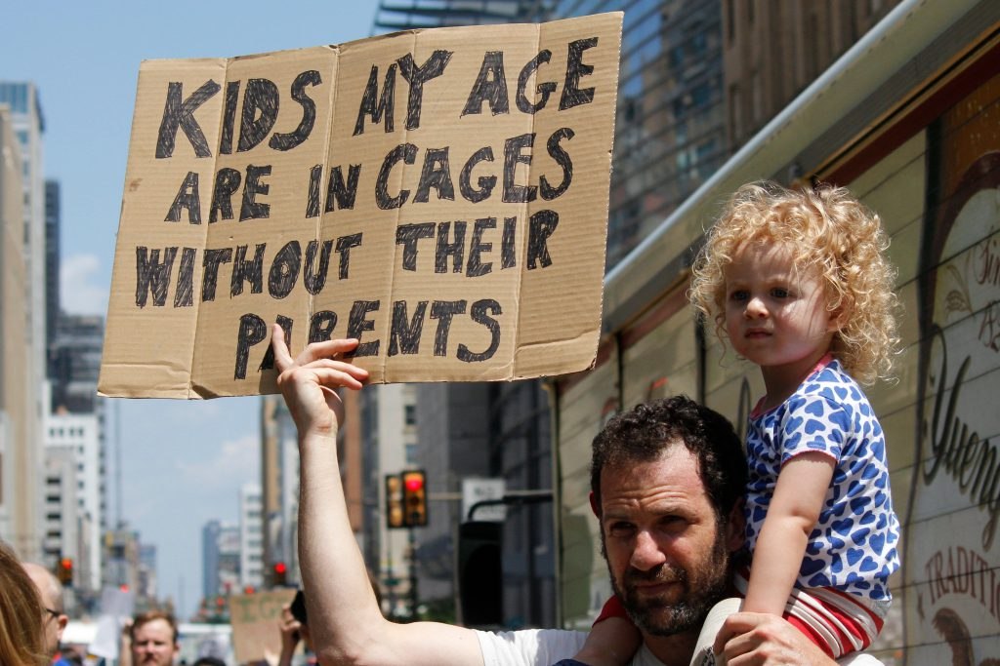

Immigration is not a new concept, yet the inhumane conditions immigrants face at the border often remains hidden from the public. These conditions occur in The United States on the daily. Specifically, children immigrants face a unique cruelty. In the spring of 2019, there were 20,000 recorded unaccompanied detained children (Thum). Furthermore, almost 72% of unaccompanied children were ages fifteen and older, yet infants and toddlers are also detained (Cheatham and Roy). This is a pressing issue because, often times, these very children do not show up alone but are rather separated from their parents at the border. For example, a five year old boy states, “I was apprehended with my father. The immigration agents separated me from my father right away. I was very frightened and scared. I cried. I have not seen my father again.” This quote brings light to the young children’s perspective. This is something that many immigrant children are left to grieve and survive with in The United States. In addition, while alone, many immigrant children face further injustices regarding their care.
Immigrants are surviving in unjust conditions at The United Sate’s southern border. As previously mentioned, many of these immigrants are children and are shown little mercy. There are health concerns because these children are not receiving proper medical attention and lack provided nutritious meals. They often times live in extremely overcrowded areas and have been reported to sleep on concrete floors with foil blankets. This is a violation of international laws and standards. Several children have died in The United States after being released from custody (Thum). Immigrants, in particular, immigrant children, deserve so much better. There is a desperate need for change to fix the human right violations faced at the southern border.
 This is how you add captions under an image. Cite your image here. You may also say something about it, if you like. This is how you add captions under an image. Cite your image here. You may also say something about it, if you like. p>How to help: Contact political representatives. Give money to organizations. Vote. Use your voice. Further education. <